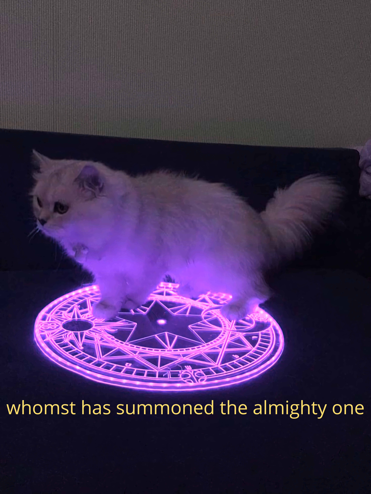
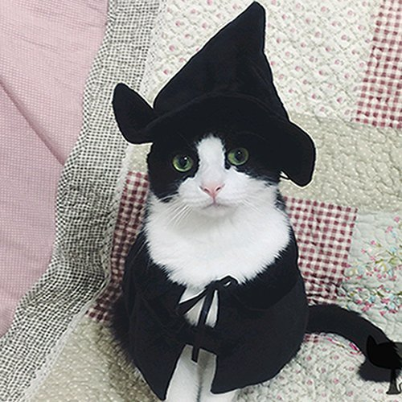
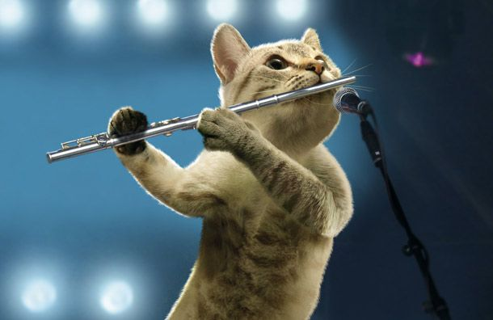
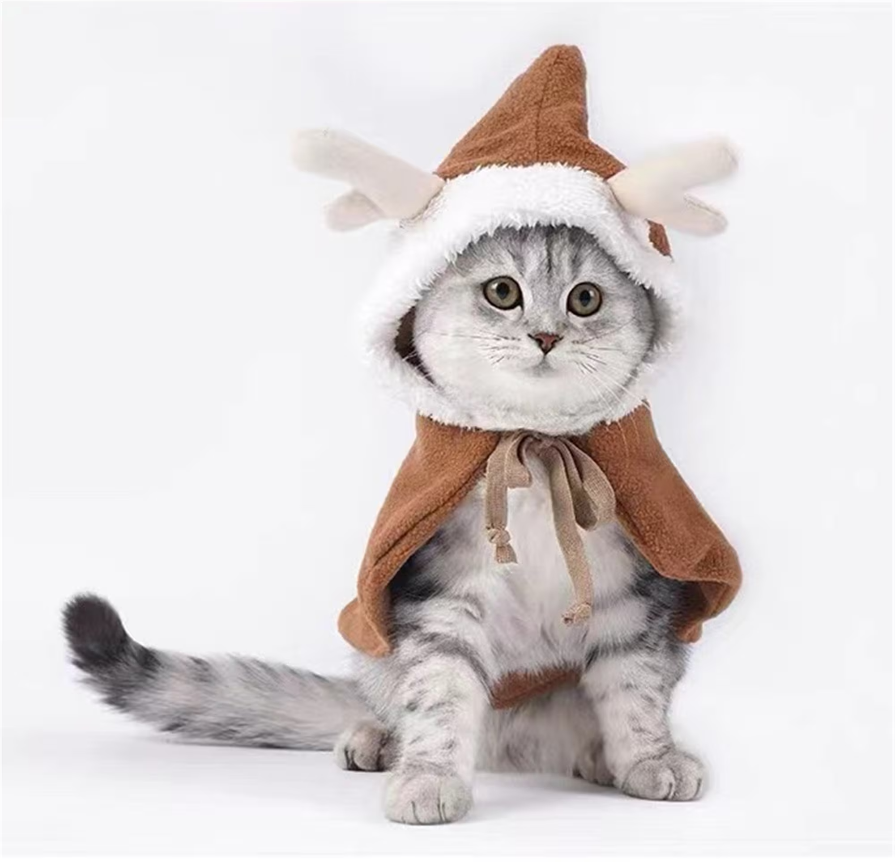
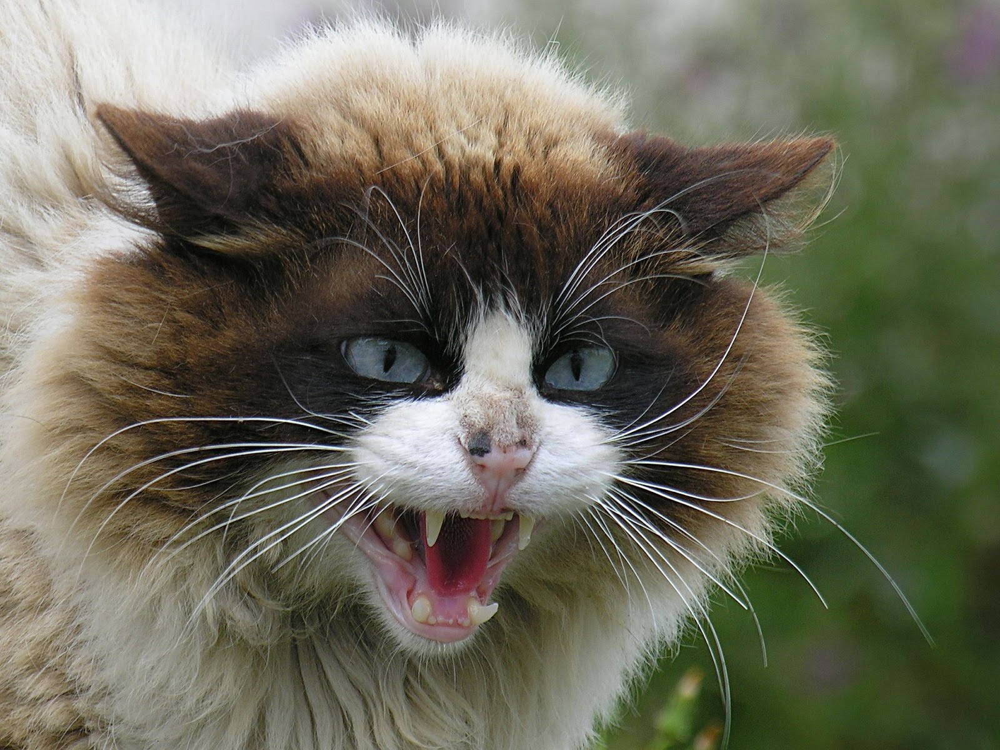
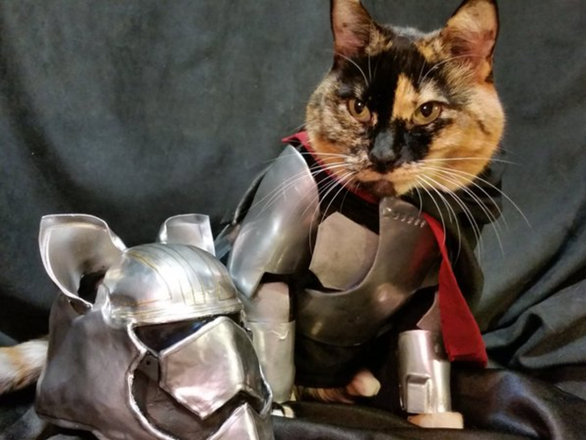
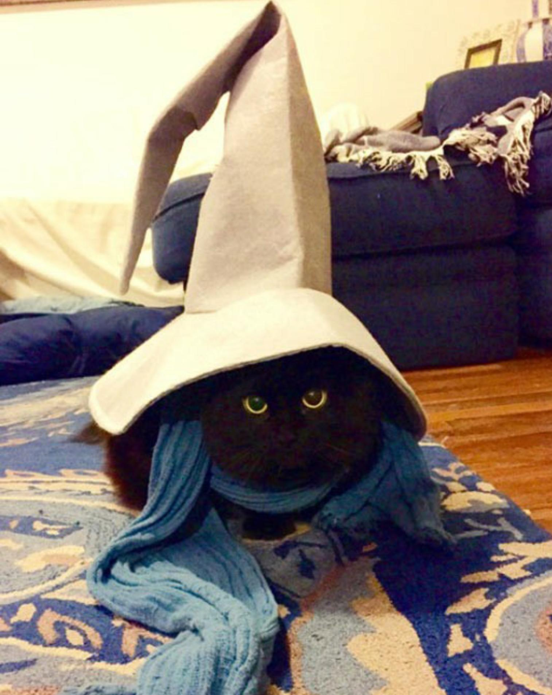
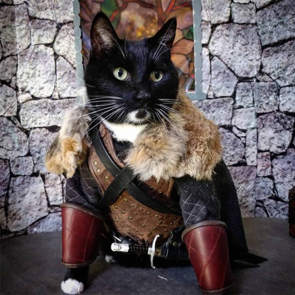
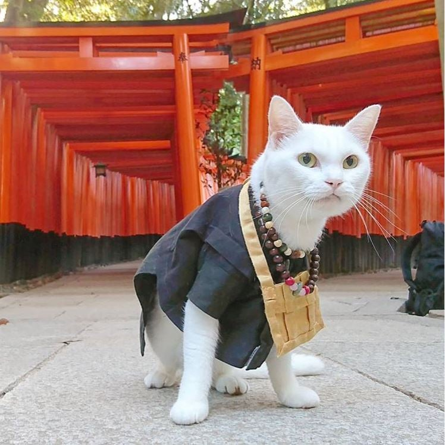
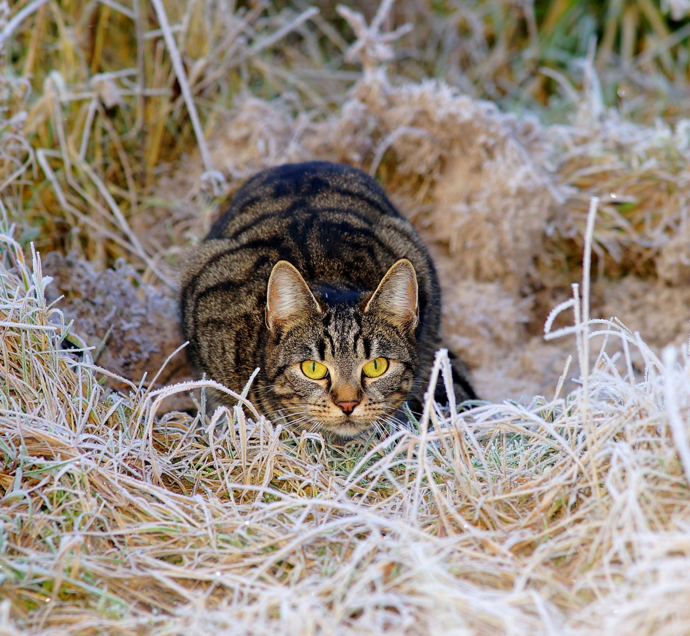

Dungeons and Cats in this feline-friendly adaptation of
Dungeons and Dragons, is a tabletop role-playing game (RPG)
where you and your friends take on the roles of adventurous cats in a
magical and mysterious world. Instead of traditional hero characters,
you'll be embodying the lives of whiskered wonders, each with their
own unique talents and personalities.
The game is guided by a Dungeon Master, who acts as the storyteller
and referee. The world of Dungeons & Cats is filled with ancient
ruins, hidden treasures, and a plethora of bizarre creatures to
encounter. Your group of cat adventurers will embark on epic quests,
explore dungeons, and face a variety of challenges, all with a feline
twist.
Here's a basic overview of how the game works:
It is a role playing game, played using mainly dice, some sheets of
paper and the threatre of mind, with optional accessories to help
facilitate the gameplay, such as a map, figurines, Dungeon Master
screen to hide his machinations behind and more.
Character Creation: Each player creates their own cat character,
choosing from different breeds like tabby, Siamese, Maine Coon, or
even rare mythical breeds like the Sphinx Cat. You also select a
class that represents your cat's unique abilities, such as the
"Pounce Mage" or the "Stealthy Rogue."
Attributes: Cats in Dungeons & Cats have their own set of
attributes, like Agility, Stealth, and Curiosity. These attributes
determine your cat's prowess in various situations.
Dice Rolling: The game utilizes various types of dice, with the
20-sided die (d20) being the most crucial. You roll dice to
determine the outcome of your cat's actions, whether it's a daring
leap across a chasm, a successful pounce on a pesky rat, or a
stealthy approach to a sleeping giant.
Quests and Adventures: The Dungeon Master weaves a story and
presents quests for your group of cats to complete. These quests
might involve rescuing a fellow cat from an evil wizard's tower,
finding a legendary ball of yarn, or thwarting the plans of a
power-hungry dog.
Combat and Challenges: When your cats encounter dangers, they engage
in combat using their unique abilities and dice rolls. You'll
pounce, scratch, and hiss your way to victory.
Role-Playing: A significant part of the game is the role-playing
aspect. Players speak and make decisions as their cats would, using
their feline instincts and personalities to solve problems and
interact with other creatures.
Character Advancement: As your cats complete quests and overcome
challenges, they gain experience points and level up. This allows
them to acquire new abilities and improve their existing ones.
World Exploration: The Dungeons & Cats world is full of mysteries,
and exploring the vast and imaginative landscape is a core part of
the game. You might uncover hidden catnip gardens, ancient
scratching posts, or even a portal to the mythical "Land of Eternal
Sunbeams."
Dungeons & Cats is a delightful and imaginative twist on the classic
Dungeons & Dragons, offering players a purrfectly unique
role-playing experience that will have you and your friends purring
with excitement as you embark on epic adventures in a world where
cats rule the roost!
Warlock 😼

He summon many things, great things, a lot of things, and has access
to a wide variety of spells, of which you use exactly one all the
time, known as Eldritch Blast.
Wizard 🧙

Wizards are supreme magic-users, defined and united as a class by the
spells they cast. Drawing on the subtle weave of magic that permeates
the cosmos, wizards cast spells of explosive fire, arcing lightning,
subtle deception, and brute-force mind control.
Bard 🎸

Whether scholar, skald, or scoundrel, a bard weaves magic through
words and music to inspire allies, demoralize foes, manipulate minds,
create illusions, and even heal wounds. The bard is a master of song,
speech, and the magic they contain.
Druid 🌲

Whether calling on the elemental forces of nature or emulating the
creatures of the animal world, druids are an embodiment of nature's
resilience, cunning, and fury. They claim no mastery over nature, but
see themselves as extensions of nature's indomitable will.
Barbarian 😡

For some, their rage springs from a communion with fierce animal
spirits. Others draw from a roiling reservoir of anger at a world full
of pain. For every barbarian, rage is a power that fuels not just a
battle frenzy but also uncanny reflexes, resilience, and feats of
strength.
Paladin ⛪

Whether sworn before a god's altar and the witness of a priest, in a
sacred glade before nature spirits and fey beings, or in a moment of
desperation and grief with the dead as the only witness, a paladin's
oath is a powerful bond.
Sorcerer 🪄

Sorcerers carry a magical birthright conferred upon them by an exotic
bloodline, some otherworldly influence, or exposure to unknown cosmic
forces. No one chooses sorcery; the power chooses the sorcerer.
Cleric ✝
Clerics are intermediaries between the mortal world and the distant
planes of the gods. As varied as the gods they serve, clerics strive
to embody the handiwork of their deities. No ordinary priest, a cleric
is imbued with divine magic.
Artificer 🧪
Masters of invention, artificers use ingenuity and magic to unlock
extraordinary capabilities in objects. They see magic as a complex
system waiting to be decoded and then harnessed in their spells and
inventions.
Fighter ⚔

Fighters share an unparalleled mastery with weapons and armor, and a
thorough knowledge of the skills of combat. They are well acquainted
with death, both meting it out and staring it defiantly in the face.
Monk 📿

Monks are united in their ability to magically harness the energy that
flows in their bodies. Whether channeled as a striking display of
combat prowess or a subtler focus of defensive ability and speed, this
energy infuses all that a monk does.
Rogue 🥷
Rogues rely on skill, stealth, and their foes' vulnerabilities to get
the upper hand in any situation. They have a knack for finding the
solution to just about any problem, demonstrating a resourcefulness
and versatility that is the cornerstone of any successful adventuring
party.
Ranger 🏹

Far from the bustle of cities and towns, past the hedges that shelter
the most distant farms from the terrors of the wild, amid the
dense-packed trees of trackless forests and across wide and empty
plains, rangers keep their unending watch.